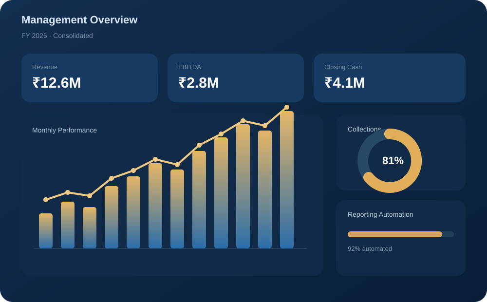
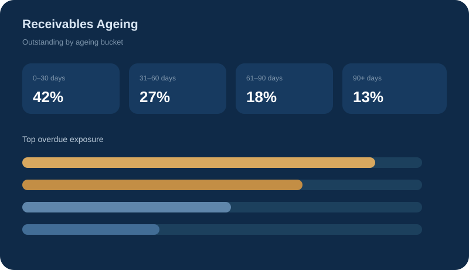
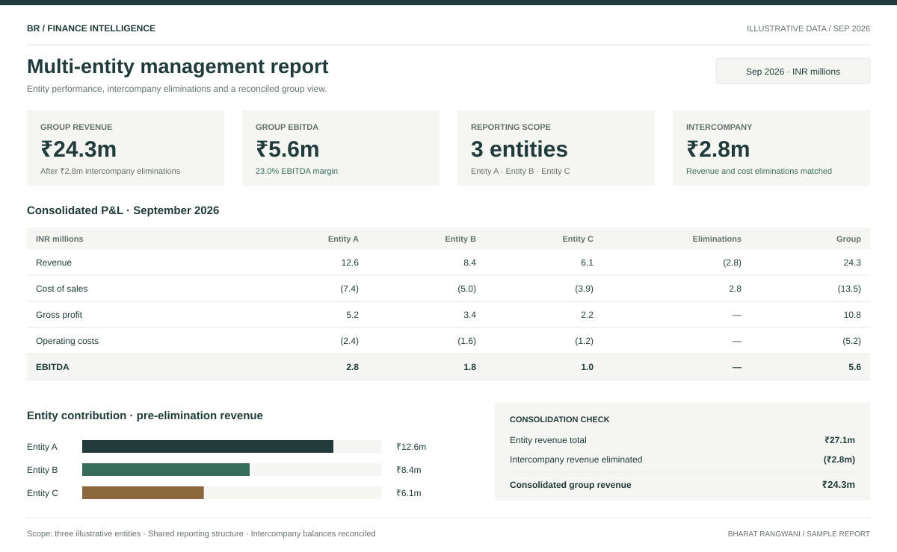

Accounting & operations
Clean books and dependable month-end routines.
Bookkeeping · Reconciliations · Ledger cleanup · Close supportFinance automation · MIS · Accounting systems
From the books to the boardroom. Clear reporting, reliable operations, and less manual work.
Independent finance & automation consultant
Good finance.
By design.
01 / THE EXPERTISE
I connect the day-to-day detail with the bigger picture, so your finance function is easier to run.
Find the right starting pointClean books and dependable month-end routines.
Bookkeeping · Reconciliations · Ledger cleanup · Close supportA management view that makes the numbers useful.
Management reporting · Dashboards · AR/AP ageing · ConsolidationLess copying. Less chasing. A repeatable process.
Excel & Power Query · Power BI · Python · Google Apps ScriptSystems that reflect how your finance team works.
Zoho Books · Implementation · Migration · Finance-domain testing02 / THE WORK, IN VIEW
From executive summaries to the detail behind them.
Explore three illustrative finance reports.

Revenue, EBITDA, cash and working capital in one report, with the variances and priorities that deserve attention.

Ageing buckets, overdue exposure and customer-level detail to support collections and plan supplier payments.

Entity-level P&L alongside the group view, with intercompany eliminations and a consistent reporting structure.
Portfolio illustrations with sample data. Figures demonstrate report design, not client results.
03 / SELECTED EXPERIENCE
A closer look at the problems I work on and the value the work is designed to create.
04 / ABOUT BHARAT
I work where accounting, reporting and technology meet.
My starting point is the finance problem: what needs to reconcile, what management needs to see, and what the team has to do every month.
Then I build the reporting, automation or system around it. From bookkeeping and MIS to Zoho implementations and finance-tool testing, the aim is practical: make the work more accurate, visible and repeatable.
Get to know me on LinkedIn (opens in a new tab)THE WORKING TOOLKIT
The right tool for
the finance problem.
LET’S START WITH YOUR FINANCE PROBLEM
A reporting bottleneck. A system migration. A process that takes too much time. Tell me where you want to start.
Discuss a Project